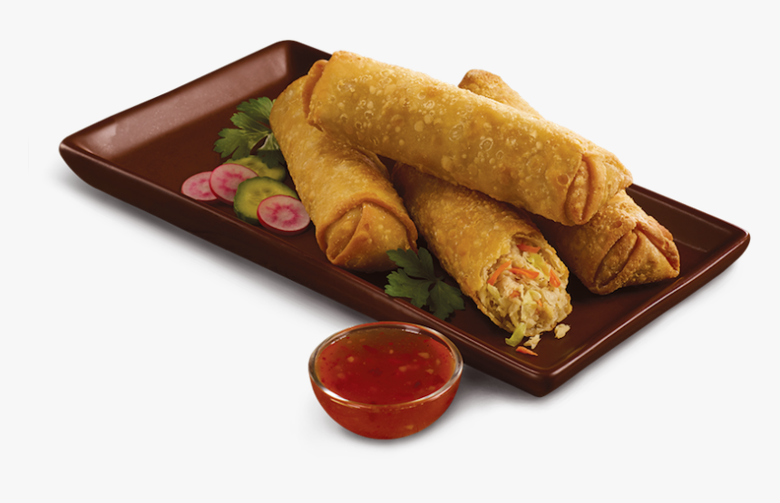

Veggie Spring Rolls

Try these fresh and light spring rolls filled with spring vegetables and served
with a simple mango dipping sauce from Tieghan of Half Baked Harvest.
Ingredients
- 1 large avocado - peeled, pitted, and thinly sliced
- 2 cups fresh vegetables such as cucumbers, lettuce, microgreens, carrots and bell peppers, thinly sliced, diced or cut into matchsticks
- Salt and pepper to taste
- ½ cup cilantro leaves
- ½ cup fresh mint leaves
- 8 rice paper wrappers
- 1 teaspoon Chopped peanuts, for topping
- Reynolds Wrap® Aluminum Foil
Steps
- In a blender, combine all the dipping sauce ingredients except the basil and cilantro.
Blend until smooth, add the basil and cilantro and pulse until chopped.
Pour into a bowl, cover and place in the fridge until serving.
- Squeeze a little lime juice over the sliced avocado. Create an assembly line of vegetables and herbs, so that they are all ready to go.
- Fill a shallow dish with warm water. Add a rice paper sheet, one at a time for 5 to 10 seconds.
Remove and place on a flat surface. Toward one end of the rice wrapper, begin layering with 1 to 2 slices of avocado,
small handfuls of fresh cilantro and mint, and a handful of veggies. Sprinkle the veggies with salt and pepper. Fold both ends to the center and roll the sheet as tightly as you can without ripping.
Place each prepared spring roll on a serving platter and cover with Reynolds Wrap® Aluminum Foil to keep the spring rolls from drying out.
- Continue with remaining ingredients, adding them to the platter as you work. Keep the spring rolls covered with foil at all times.
- Serve the spring rolls with the mango dipping sauce and chopped peanuts (if desired).
Return to Index